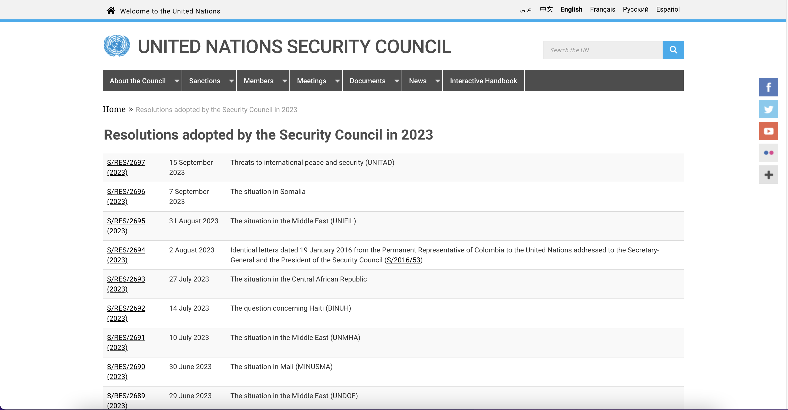
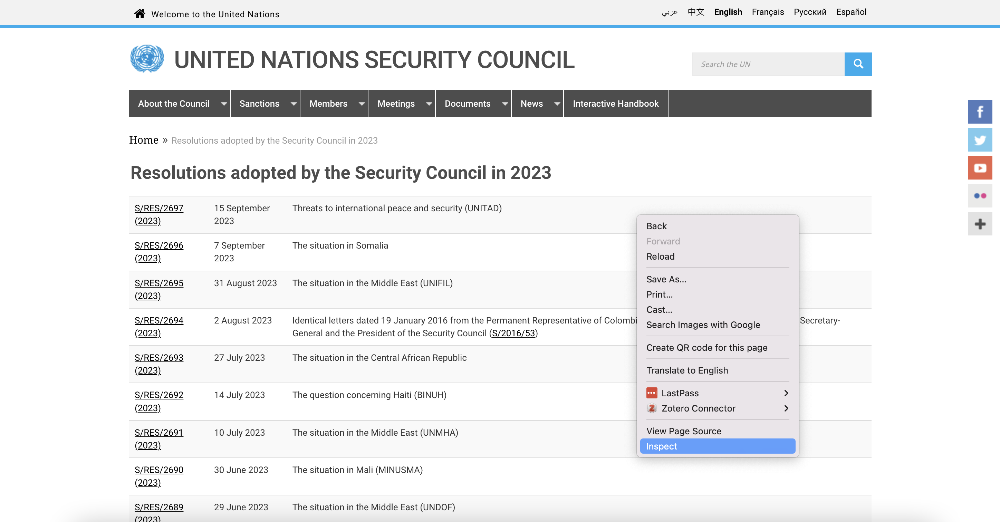
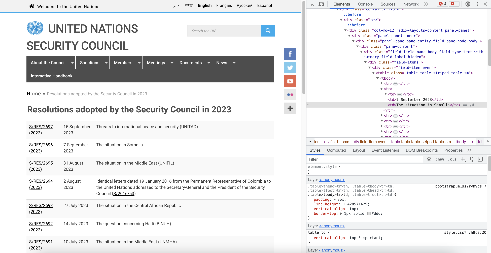
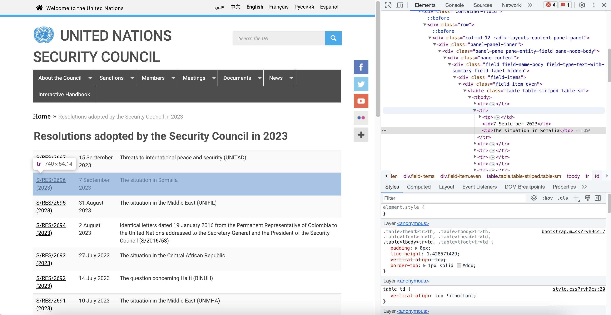
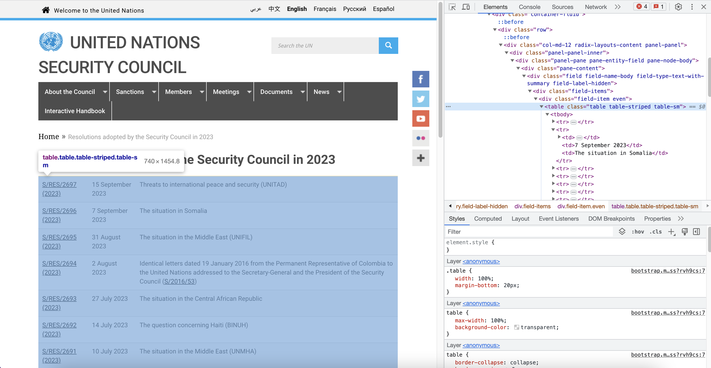

install.packages(c("rio", "httr2", "rvest"))Research Design
Readings
Class
Pollock & Edwards, Chapter 4
Lab
Pollock & Edwards R Companion, Chapter 5
Section
Prerequisites
# Data cleaning and handling
library(tidyverse)
# Reading data files
library(rio)
# Web-scraping
library(httr2)
library(rvest)How will what you learn this week help your research?
Critical to our ability to understand the relationship between our outcome of interest and all of the variables that we think determine (or are, at least, associated) with that outcome is our ability to observe those variables moving with one another. To do this, we need quality data that accurately measure those variables. This week, we discuss how you can collect that quality data. The method by which you do this is very important to the quality of that data (i.e. how accurately it reflects the phenomena in which you are interested).
We have two broad methods at our disposal: observational research and experimental studies. Experimental studies are considered to be the gold standard for causal inference (your ability to confidently say that changes to your independent variable cause changes to your dependent variable).
Experiments are not always feasible or appropriate. In fact, a lot of political science research (particularly international relations research) relies on observational studies. Unlike experiments, in which the researcher intervenes, observational research involves recording changes in your variables without influencing those variables.
When you conduct your own research, you will need to make important decisions about what data you will use to uncover the relationships described by your theory. This week introduces you to some of the factors you will need to consider when making those decisions.
Data collection
A lot of political science research uses observational data to make inferences about the relationship between some outcome of interest and various factors that are associated with that outcome of interest. For example, we collect data on the incidence of civil war. We also collect data on the regime type of the governments that have experienced civil wars and those that have not. We can then look at whether more civil wars occur in countries with particular regime types. This week, I will introduce some common techniques for collecting observational data used by political scientists.
Common data sets
There are many large-scale data sets that are commonly used in political science research. These include: the American National Election Survey, with which you are becoming very familiar; the Varieties of Democracy data set; and various Correlates of War data sets, include the Militarized Interstate Disputes data set.
The easiest way to access these data sets is via their associated websites. You can download the data file, store it in your R project, and use it in your analysis.
However, these data sets are updated regularly. It can be tedious to download new data files every time they are updated.
Programmatically downloading data sets from the internet
It is very easy to download a file programmatically. The URL used to access the file can be thought of as a file path. Therefore, all you need to do is provide that URL (file path) to the appropriate R command and you will read in that data set directly from the internet.
For example, let’s read the UCDP/PRIO Armed Conflict Data Set into our current R session.
Note
From the UCDP website, the UCDP/PRIO Armed Conflict Data Set is:
A conflict-year dataset with information on armed conflict where at least one party is the government of a state in the time period 1946-2022.
We can use the very flexible rio::import() function to do this:
ucdp_actor_df <- import("https://ucdp.uu.se/downloads/ucdpprio/ucdp-prio-acd-231-csv.zip") |>
as_tibble()
head(ucdp_actor_df)# A tibble: 6 × 28
conflict_id location side_a side_a_id side_a_2nd side_b side_b_id side_b_2nd
<int> <chr> <chr> <chr> <chr> <chr> <chr> <chr>
1 11342 India Gover… 141 "" GNLA 1163 ""
2 11342 India Gover… 141 "" GNLA 1163 ""
3 11343 Egypt, Is… Gover… 117 "" Gover… 121 ""
4 11343 Egypt, Is… Gover… 117 "" Gover… 121 ""
5 11343 Egypt, Is… Gover… 117 "" Gover… 121 ""
6 11343 Egypt, Is… Gover… 117 "" Gover… 121 ""
# ℹ 20 more variables: incompatibility <int>, territory_name <chr>, year <int>,
# intensity_level <int>, cumulative_intensity <int>, type_of_conflict <int>,
# start_date <IDate>, start_prec <int>, start_date2 <IDate>,
# start_prec2 <int>, ep_end <int>, ep_end_date <IDate>, ep_end_prec <lgl>,
# gwno_a <chr>, gwno_a_2nd <chr>, gwno_b <chr>, gwno_b_2nd <chr>,
# gwno_loc <chr>, region <chr>, version <dbl>Insofar as that URL points to the most up-to-date data file, you now have programmatic access to that data set.
APIs
This process is great because it is very straightforward and easy to implement. However, it can often not be very durable. Sometimes links break, or the authors of the data set change the structure of the data set stored in that data file, or they make a new link for more up-to-date data.
Popular data sets often come with APIs, or Application Programming Interfaces. These can help us maintain durable, programmatic access to our data.
APIs can get a bit complicated. Today, I am going to briefly introduce you to them and some packages that can help you work with them from R. This is, by no means, a comprehensive tutorial on working with APIs, but it should give you the tools to get started with this very useful data collection process.
The best package in R for working with APIs is httr2. The documentation for this package is great and I would encourage you to have a look at it if you get stuck.
UCDP provides an API to access their data sets. You can see the documentation for this API here: https://ucdp.uu.se/apidocs/.
To start, we need to load the httr2 package into our R session.
library(httr2)Next, we need to create our API request. For the UCDP API (and many other APIs), this essentially involves constructing a URL from which you will download the data.
The UCDP API request takes four different arguments:
The
<resource>, or the data set you want to access. We will stick with the UCDP/PRIO Armed Conflict Data Set.The
<version>, or the version of the data set you want to access. As I said, this data set is regularly updated. At the time of writing, the latest version of the data set is 23.1.The
<pagesize>andpage. This data set is (kind of) large: it has 2,626 rows. The API will only provide between 1 and 1,000 rows at a time. Therefore, if you want to return more than 1,000 rows (as you would need to if you wanted to access the whole data set), you need to set the page size to 1,000 and iterate over multiple pages (in this case, we need to go through 3 pages to get the full 2,626 rows.
Let’s start simply by accessing the first 10 rows of the data set.
First, we need to get the base URL. This is provided in the UCDP API documentation. You will see that they provide the following base URL:
ucdp_url <- "https://ucdpapi.pcr.uu.se/api/<resource>/<version>?<pagesize=x>&<page=x>"You can see where we need to insert our four arguments: <resource>, <version>, <pagesize=x>, and <page=x>. We can get the relevant values from the UCDP API documentation. These are:
<resource>:ucdpprioconflictfor the UCDP/PRIO Armed Conflict Data Set;<version>: 23.1.
We will start slowly by retrieving the first 10 rows of this data set. Therefore:
<pagesize=x>:<pagesize=10>;page=x:page=1.
Adding these into our base URL creates the following request URL:
ucdp_url <- "https://ucdpapi.pcr.uu.se/api/ucdpprioconflict/23.1?pagesize=10&page=1"Now that we have our URL, we can make our request to the API using httr2::request():
req <- request(ucdp_url)
reqNext we need to perform the request using httr2::req_perform():
resp <- req |>
req_perform()We can check the status of our request:
resp |>
resp_status()[1] 200200 is good! It means that we have successfully performed our request. For a full list of HTTP status codes, look here.
Now, let’s get our data! You can look at it using the following command:
resp |>
resp_body_json()The response is an array of JSON objects. JSON is just a very light-weight way of sharing data. Lots of APIs will respond with this structure.
The API gave us lots of information. We want the Result object. This is where the data set is stored. First, we need to access the data from the response. We do this using the httr2::resp_body_json() function.
results_raw <- resp |>
resp_body_json()The data set is stored in the Results object. You can have a look at it by running this:
results_raw$ResultThis is a JSON object, which can be a bit difficult to work with. It is much easier to work with a tibble or data frame. To convert this JSON object to a tibble, we can use tibble::enframe() and tidyr::unnest_wider() (both of which are loaded with tidyverse.
results_df <- enframe(results_raw$Result) |>
unnest_wider(value)
results_df# A tibble: 10 × 29
name conflict_id location side_a side_a_Id side_a_2nd side_b side_b_Id
<int> <chr> <chr> <chr> <chr> <chr> <chr> <chr>
1 1 11345 South Sudan Governme… 113 "Governme… SPLM/… 4226
2 2 11345 South Sudan Governme… 113 "Governme… SPLM/… 4226
3 3 11345 South Sudan Governme… 113 "" SPLM/… 4226
4 4 11345 South Sudan Governme… 113 "" SPLM/… 4226
5 5 11345 South Sudan Governme… 113 "" SPLM/… 4226
6 6 11345 South Sudan Governme… 113 "" NAS 6794
7 7 11345 South Sudan Governme… 113 "" NAS 6794
8 8 11345 South Sudan Governme… 113 "" NAS, … 6794, 82…
9 9 11346 Libya Governme… 111 " Governm… Force… 1126, 11…
10 10 11346 Libya Governme… 111 "" ASL 7046
# ℹ 21 more variables: side_b_2nd <chr>, incompatibility <chr>,
# territory_name <chr>, year <chr>, intensity_level <chr>,
# cumulative_intensity <chr>, type_of_conflict <chr>, start_date <chr>,
# start_prec <chr>, start_date2 <chr>, start_prec2 <chr>, ep_end <chr>,
# ep_end_date <chr>, ep_end_prec <chr>, gwno_a <chr>, gwno_a_2nd <chr>,
# gwno_b <chr>, gwno_b_2nd <chr>, gwno_loc <chr>, region <chr>, version <chr>Cool! We now have the first 10 rows of the UCDP/PRIO Armed Conflict Data Set.
You can do more precise requests with APIs. For example, you can request data for specific countries or time frames. This can be very useful when you are working with big data because it can allow you to work in memory by segmenting your analysis.
Web scraping
Another useful method for collecting data from the internet is web scraping. Web scraping allows you to extract data from a website. I am going to very quickly introduce you to this process and some useful R packages for performing web scraping. Again, this will be a very cursory introduction that aims to provide you with the tools to build up this skill if you need it.
The best package for web scraping in R is rvest. We can use this package to harvest data from the web.
First, let’s load rvest into our current R session:
library(rvest)Let’s practice by creating a data set of all of the UNSC resolutions passed this year. The UNSC provides a table of these resolutions on its website:

This table includes some very useful information for anyone interested in looking at UNSC behaviour over time. It provides the unique resolution ID, the data of adoption, and a brief title or description of the resolution. We are going to use rvest and friends to read that information into R so that we can analyze it.
The first step you need to do is to read in the web page:
unsc_res <- read_html("https://www.un.org/securitycouncil/content/resolutions-adopted-security-council-2023")Web pages are (generally) HTML files. HTML is a markup language that is the standard format for documents displayed in web browsers.
We can have a look at this HTML file:
unsc_res{html_document}
<html lang="en" dir="ltr">
[1] <head>\n<meta http-equiv="Content-Type" content="text/html; charset=UTF-8 ...
[2] <body class="layout-no-sidebars has-featured-top page-node-691811 path-no ...I am not about to teach you yet another scripting language. All you need to know is that HTML documents are highly structured. We can use this structure to point R to the specific part of the document that we want to scrape.
Here is a basic example of HTML (from the rvest documentation):
<html>
<head>
<title>Page title</title>
</head>
<body>
<h1 id='first'>A heading</h1>
<p>Some text & <b>some bold text.</b></p>
<img src='myimg.png' width='100' height='100'>
</body>HTML is hierarchical: all elements are nested within one another, providing them with a place within the documentation.
All HTML elements are contained within two tags: a start tag (<tag>) and corresponding end tag (</tag>). These tags can have attributes that can group them together.
For example, the above HTML code includes a heading (<h1>) that includes an id attribute 'first'. The text of the heading - A heading - is contained within the heading tag. We know where the heading ends because it closes out with a </h1> tag.
Here, we want to scrape the table that contains all the useful information about the resolutions. We need to find the part of the HTML document that contains that table.
Head back to the web page. We are looking at the rendered HTML. We need to find where in this document the table is located. To do this, right click anywhere in the table and select Inspect.

A new window will pop up on the side of your web page that shows you the raw HTML language that is generating this web page.

This can look a bit weird if you have not come across HTML before, but it can be easy to work with. Scroll your mouse across different lines in that raw HTML window. You will see the corresponding parts of the rendered page light up.

Scroll until you have highlighted the whole table. You will be on a line that reads: <table class="table table-striped table-sm">.

Without getting too into the HTML weeds, this is the code used to generate the table. It includes a couple of unique identifiers that are useful for web scraping. Here, we are going to use the unique class of this table.
The class is table table-striped table-sm. When providing that to httr2::html_element() (which is function we use to select that part of the HTML document), we need to replace those spaces with full stops:
unsc_res |>
html_element("table.table-striped.table-sm"){html_node}
<table class="table table-striped table-sm">
[1] <tbody>\n<tr>\n<td><a href="http://undocs.org/en/S/RES/2721(2023)">S/RES/ ...We have filtered the whole HTML document to only the table we want to select. We don’t want to work with this table in HTML. Let’s convert it into a data frame. We can use the very helpful httr2::html_table() function to extract this tabular data and convert it:
unsc_res |>
html_element("table.table-striped.table-sm") |>
html_table()# A tibble: 50 × 3
X1 X2 X3
<chr> <chr> <chr>
1 S/RES/2721 (2023) 29 December 2023 The situation in Afghanistan
2 S/RES/2720 (2023) 22 December 2023 The situation in the Middle East, includi…
3 S/RES/2719 (2023) 21 December 2023 Cooperation between the United Nations an…
4 S/RES/2718 (2023) 21 December 2023 The situation in the Middle East (UNDOF)
5 S/RES/2717 (2023) 19 December 2023 The situation concerning the Democratic R…
6 S/RES/2716 (2023) 14 December 2023 Threats to to international peace and sec…
7 S/RES/2715 (2023) 1 December 2023 Reports of the Secretary-General on the S…
8 S/RES/2714 (2023) 1 December 2023 The situation in Somalia
9 S/RES/2713 (2023) 1 December 2023 Peace and Security in Africa
10 S/RES/2712 (2023) 15 November 2023 The situation in the Middle East, includi…
# ℹ 40 more rowsAwesome! We now have a table of all of the resolutions passed by the UNSC this year. Let’s clean it up a bit:
unsc_res_df <- unsc_res |>
html_element("table.table-striped.table-sm") |>
html_table() |>
rename(id = X1,
date_adoped = X2,
title = X3)
unsc_res_df# A tibble: 50 × 3
id date_adoped title
<chr> <chr> <chr>
1 S/RES/2721 (2023) 29 December 2023 The situation in Afghanistan
2 S/RES/2720 (2023) 22 December 2023 The situation in the Middle East, includi…
3 S/RES/2719 (2023) 21 December 2023 Cooperation between the United Nations an…
4 S/RES/2718 (2023) 21 December 2023 The situation in the Middle East (UNDOF)
5 S/RES/2717 (2023) 19 December 2023 The situation concerning the Democratic R…
6 S/RES/2716 (2023) 14 December 2023 Threats to to international peace and sec…
7 S/RES/2715 (2023) 1 December 2023 Reports of the Secretary-General on the S…
8 S/RES/2714 (2023) 1 December 2023 The situation in Somalia
9 S/RES/2713 (2023) 1 December 2023 Peace and Security in Africa
10 S/RES/2712 (2023) 15 November 2023 The situation in the Middle East, includi…
# ℹ 40 more rowsFor more information on web-scraping, I recommend reading the Web scraping 101 article in the rvest documentation.